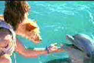

|
Zeus and Roxanne/C+,A- |
|
Warner/1996/98m/ANA 1.85 |
|
First response is no, not another dolphin or killer whale movie, but for most of its
good-natured 100 minutes, Zeus and Roxanne is easy to like. Yes, it's Flipper with a
dog, but at least the elements of the romance between Mom and Dad are enjoyable. Villains in these
movies tend to be moronic and Zeus and Roxanne is no exception. Family fare that's watchable
adds value here.
 |
|
The dog and the dolphin. ©HBO |
The DVD keep compact with the
material. Colors are bright. The DVD is presented widescreen 1.85 and is very sharp. Music is
aggressive but does not overpower dialogue. |
|

Selections from the feature archive include articles on Akira Kurosawa,
Frank Darabont, Blonde Bimbos, Hollywood
Street Gangs, or Vietnam:
The Hollywood Pariah, and many more....
Sturges Emerges
Preston Sturges was Hollywood's resident comic genius for more than a decade. His movies are
timeless. Click on his image to read all about it.

 Gary Morris's insightful publication Bright Lights
Film Journal turns the celluloid in films from a unique perspective. Click on the image above
for more pure movie views. Gary Morris's insightful publication Bright Lights
Film Journal turns the celluloid in films from a unique perspective. Click on the image above
for more pure movie views.

Click on the link to visit the judge's chambers.
Imaging Science Foundation
The Imaging Science Foundation promotes proper standards in home theater viewing. ISF trained
technicians offer monitor calibration services to consumers. The difference in a properly
calibrated monitor can be astounding. Click on the image to find an ISF member near you.

Information on film sound in theaters and home theaters. Lots of helpful information provided in a
handsome interface.
|